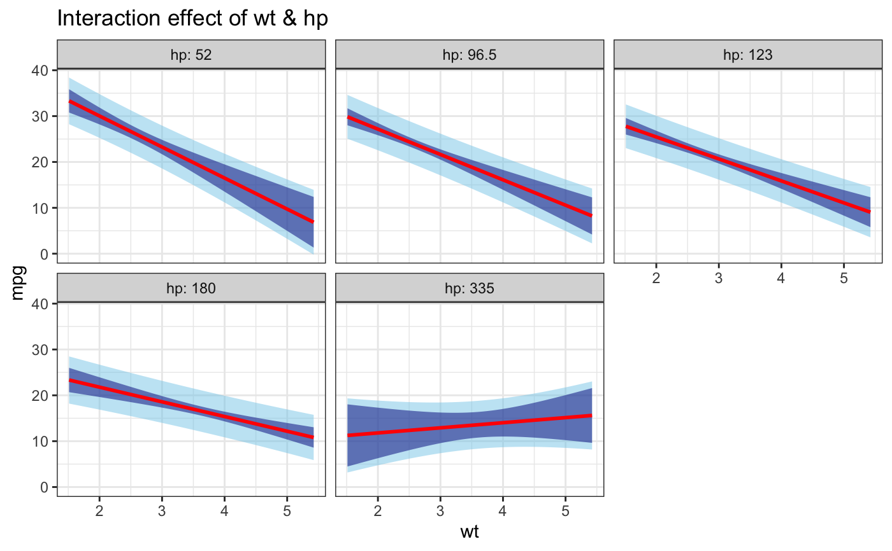
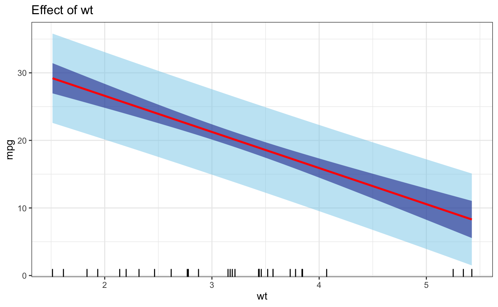

Calculates and plots the confidence and prediction intervals for the terms used on a linear model.
intervalos( model, sig.level = 0.95, pred.fill = "skyblue", conf.fill = "darkblue", line.col = "red", points.col = "black", alpha = 0.5, plot.data = FALSE )
| model | Linear model of type |
|---|---|
| sig.level | Significance level to use for the intervals (Default is 0.95) |
| pred.fill | Fill color for the prediction interval region |
| conf.fill | Fill color for the confidence interval region |
| line.col | Line color for the fitted values |
| points.col | Color for the data points |
| alpha | Transparency value to use for confidence and prediction regions (Default is 0.5) |
| plot.data | A logical indicating either to plot the data points or not. Does not apply for the interaction effect plot, only indivual terms (Default is FALSE) |
A list of plots of effects
As of now this function can only take numeric (continuous) variables, which can be present in the linear model as polynomial, logarithmic, and/or interactions. The function estimates the effect of each term in the model while holding the rest constant at their mean value. It can only deal with models with ONE (1) interaction and ONE (1) logarithmic term. The interaction effect is plotted using the 5 major quantiles (0, 25, 50, 75, 100) of the second term in the interaction
m1 = lm(mpg ~ wt + hp, mtcars) m2 = lm(mpg ~ wt + I(wt^2) + hp, mtcars) m3 = lm(mpg ~ wt * hp, mtcars) m4 = lm(mpg ~ wt, mtcars) m5 = lm(mpg ~ log(wt), mtcars) m6 = lm(mpg ~ log(wt) * hp, mtcars) intervalos(m1)#> $wt#> #> $hp#>intervalos(m2)#> $wt#> #> $hp#>intervalos(m3)#> $wt#> #> $hp#> #> $`wt:hp`#>intervalos(m4)#> $wt#>intervalos(m5)#> Error in UseMethod("boundary"): no applicable method for 'boundary' applied to an object of class "character"intervalos(m6)#> Error in UseMethod("boundary"): no applicable method for 'boundary' applied to an object of class "character"